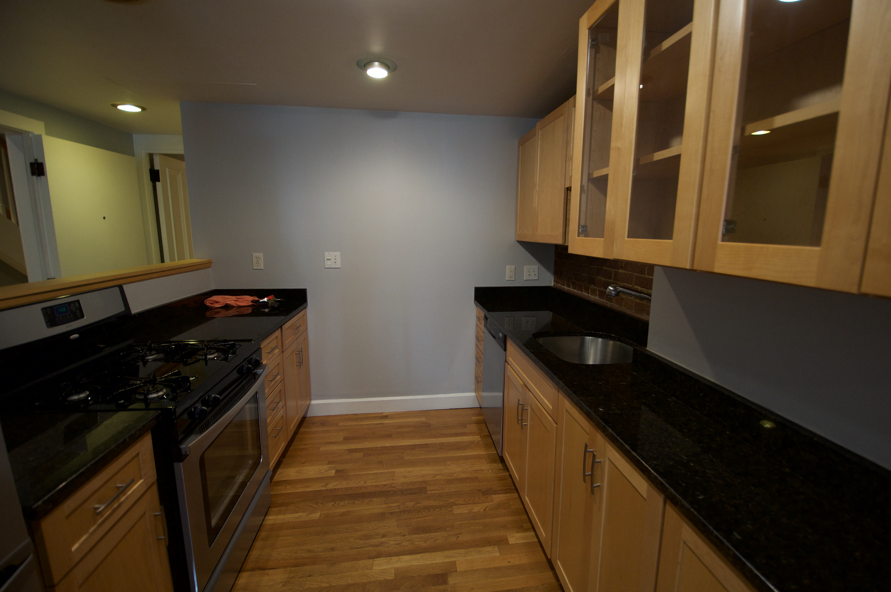
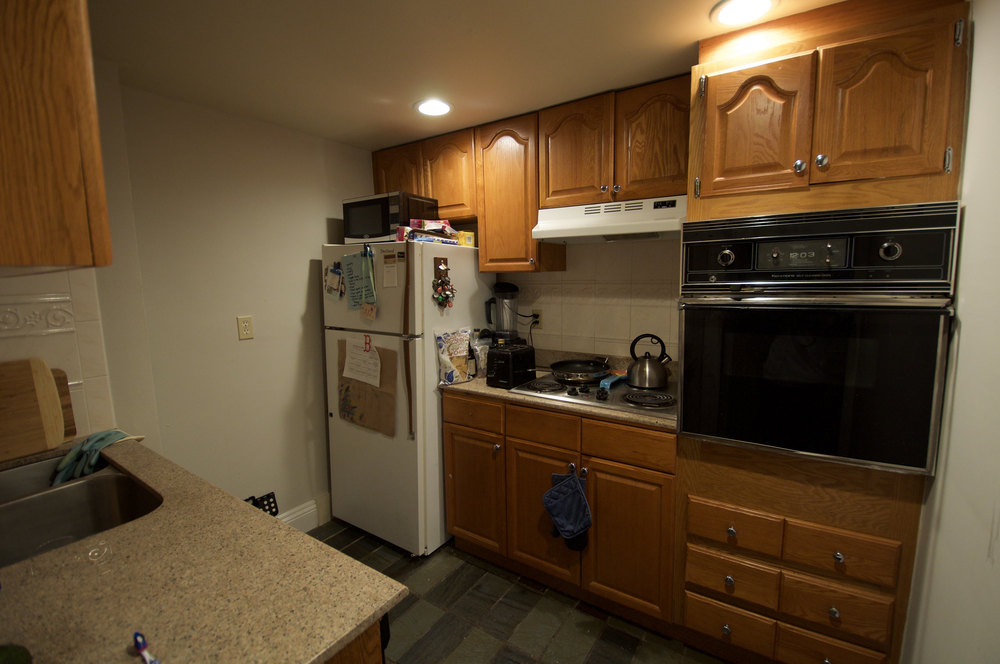
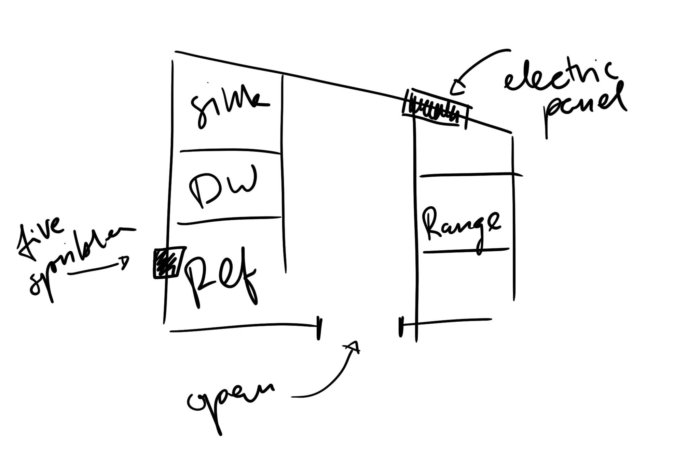
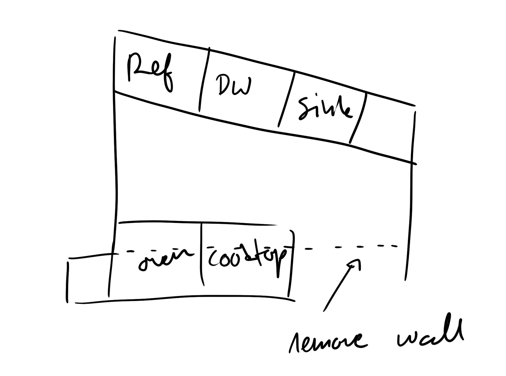

Where We've Been

Before I get into the details of what’s happening with the kitchen project now, I thought it would be a good idea to take a step back and explore how I got here. It’s been a long journey from deciding to take on this project to realizing it’s harder than I thought, and then having plans derailed by a once-in-a-lifetime public health crisis.
When I was shopping for a place to buy, it quickly became clear that the kitchens fell into one of two camps. Either they hadn’t been touched for 30 years, or they were recently renovated, but with questionable taste.

One option I didn’t go for. The cabinet installers were so bad, I can tell some of the doors aren’t in alignment by looking at this photo, which is hiding many smaller sins. This apartment also had the disadvantage of being in a basement.
One apartment I looked at (sadly, I forgot to take a photo) had a kitchen that was more or less a corner of the living room in which they’d installed a $10,000 Sub-Zero refrigerator and a half-size dishwasher. Yes, I could have removed it after purchase, but then I’ve have to pay for a $10,000 refrigerator that I didn’t want. Others, like the one in the photo above, were clearly designed to tick boxes on a real estate listing, not work well as a system. One easy check: nothing I looked at had a dishwasher that cost more than my most expensive stock pot. Admittedly, my most expensive stock pot cost about $400 — which is a lot for a piece of cookware — but it’s also really not that much for a dishwasher. By comparison, that expanse of low-grade jet black granite probably cost upwards of $5,000. It truly boggles my mind someone would want such fancy worktops but skimp on way more useful choices, like spending the extra money to get drawers with nice runners instead of shelves in the lower cabinets.

Another option I didn’t take. The second “bedroom” was more of a closet. Note that they did upgrade to (ugly) beige granite worktops to tick the “granite counter” box on real estate listings.
Instead, I chose to go for something that hadn’t been touched for 30 years. How hard could it be to scape together $20,000 to renovate a kitchen? As it turns out, pretty hard when you vastly underestimate all the leeches who siphon money off unsuspecting people when you buy a home and encounter some novel personal financial issues. (I’m not allowed to discuss those for legal reasons.)
By the time I had the money put together last fall, I also realized that $20,000 wasn’t going to be enough for my tiny kitchen and big ambitions. At the moment, I’m budgeting closer to $30,000, and I wouldn’t be surprised if I spend more than $40,000.

The current layout.
Given this was a small project, the idea of hiring an architect seemed like an indulgence at first. I felt good enough planning something out with basic CAD software to hand off to what I hoped would be a competent contractor who might be capable of helping me iron out some of the more ambiguous details. My choices were fairly modest: Ikea cabinets to save money, locating services like plumbing to avoid expensive changes to the structure. Even that, however, proved to be too much. Every contractor I spoke to said I’d need an architect, if only to comply build local building regulations.

The renovation concept.
Speaking of, the process of finding a contractor isn’t one known for being pleasant. My experience didn’t do much to counter that. No one seems to have realized it’s easy to set up an email address, let alone a website. Hunting them down was a game of telephone tag. Call at off hours, and they’ve checked out for the day. Call during the day, and they barely give you notice because they’re trying to finish their work.
When I did find someone, it was not an especially productive relationship. Despite being a man, I’m pretty sure I fell victim to “mansplaining.” Because my kitchen was built in the 1950s, they decided to put the electrical panel in the kitchen. Rotating the layout virtually necessitates moving that, which is expensive, probably in the region of $3000. It’s a strange feeling to put that in an email and mention it on the phone up front, only to have the someone call and spend 20 minutes explaining it again, as if there was no way I could have understood it.
Then, of course, the pandemic hit. With it came a construction ban in my building and the necessity that I work from home more or less indefinitely. The idea of living off microwave meals and takeout isn’t super appealing to me. But at least in the pre-covid world I could have commandeered a friend’s kitchen, gone out to restaurants, and traveled freely.
It was the realization that the public health crisis may last for another year or more that pushed me to bring this project back to life. If I wait for the situation to really improve, it might be 2022 before I have a new kitchen — five years after I moved in.
Next time, I’ll share my experiences finding an architect to whip the project into shape. I figure, if I have to engage a firm anyway, I might as well have them help me build something that goes beyond my amateur efforts.